Originally written in 2008

Advice of the Day Translations
- きょうはうっかりミスにちゅういしよう！ = Be careful of mistakes today!
- きょうはあたまをつかいすぎ？やすもう = Are you thinking too much today? Let’s rest.
- きょうはのうをつかうしごとがはかどりそう = Today, work that uses the brain seems to be progressing well.
- きょうはスポーツでかつやくできそう = I think I can be active in sports today.
- きょうはこくはくするとうまくいきそう = Love confessions will be successful today.
- きょうはこころがカゼをひきそう？リラックス! = Is your heart catching a cold (feeling emotionally down)? Relax!
Activity Translations
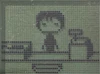
コンビニでパイとちゅう = Part time job at a convenience store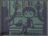
でんしゃで うちに かえります = Taking the train home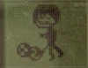
スポーツ しています = Playing sports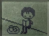
ほんを よんでいます = Reading a book びょうきに なりました = I fell ill
びょうきに なりました = I fell ill
 ともだちと ランチ しています = Lunch with a friend
ともだちと ランチ しています = Lunch with a friend
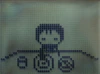
ごはんを たべています = Having a meal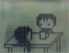
ともだちと あそびにきました = I came to play with my friend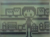
かいもの しています = Going shopping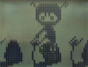
ジムで トレーニングちゅう = Training at the gym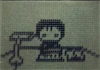
いえで べんきょうちゅう = Studying at home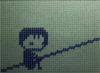
すきなひとのことを かんがえています = Thinking about the person I like ひるね しています = Taking an afternoon nap
ひるね しています = Taking an afternoon nap
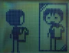
へんなふくを きようとしています = I'm trying to wear strange clothes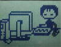
ネットで あやしいサイトを みています = I'm visiting a suspicious site on the Internet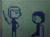
えいかいわスクールに きています = I'm attending English Conversation School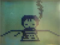
テストちゅう = Taking a test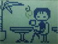
おちゃ しています = Sipping tea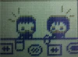
ごうコンで もりあがっています = The mixer party is exciting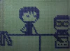
ぶかのめんどうを よくみています = I take good care of my subordinates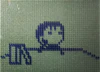
なまけて います = I'm being lazy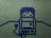
メールを チェックしています = Checking emails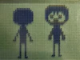
ひとのはなしを よくきいています = I often listen to people's stories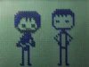
じょうしに ペコペコしています = Sucking up to my boss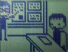
かいぎを まじめにきいています = I'm listening to the meeting seriously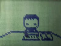
バリバリ べんきょうしています = Studying hard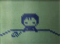
テストがかえってくるので きんちょうしています = I'm nervous because the test results are back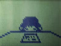
テストで 90てんを とりました = I got 90 points in the testいいわけ しています = I am making excuses
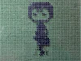
まちを ぶらぶら あるいています = Walking around the city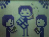
わたしの たんじょうびパーティー! = It's my birthday party!